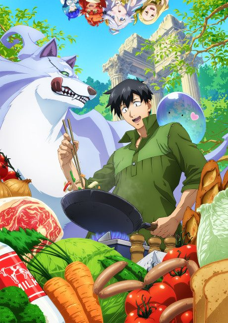
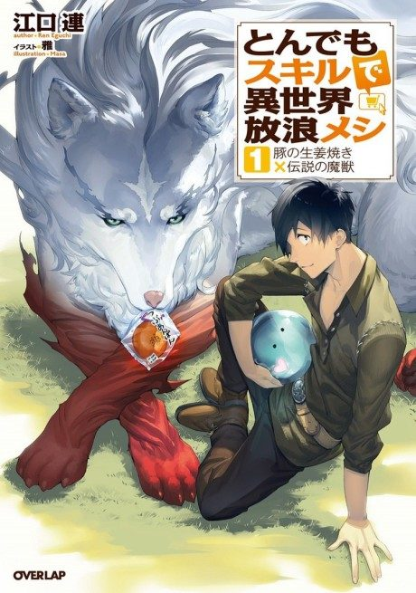
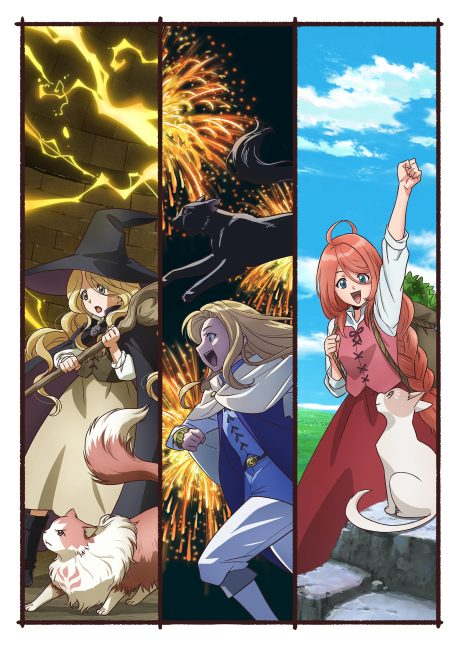
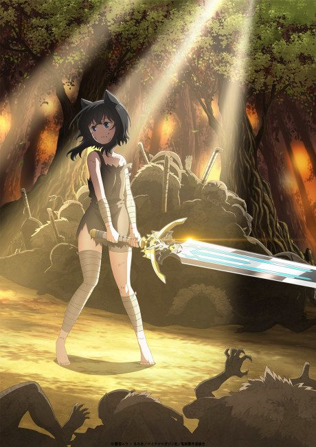

Campfire Cooking in Another World with my Absurd Skill
とんでもスキルで異世界放浪メシ
Mukouda is summoned to another world with the seemingly useless skill of ordering groceries online, but his cooking soon attracts a legendary wolf.
After the anime, read the light novel from Volume 6.
7.5AniList score
—Animeter, no votes yet
24episodes, 2 seasons
Rate it or report where you stopped
Is it worth pushing through?
Built from what visitors report across all 2 seasons (24 episodes).
Loading reports…Checking what other people said about this one.
Sign in above with your email to add your report.
More like Campfire Cooking in Another World with my Absurd Skill
 Manga Ch. 11518.7
Manga Ch. 11518.7
 Manga Ch. 618.4
Manga Ch. 618.4
 Manga Vol. 128.0
Manga Vol. 128.0
 Manga Ch. 538.5
Manga Ch. 538.5
 Manga Vol. 157.6
Manga Vol. 157.6
 Film7.9
Film7.9
 Film8.2
Film8.2
 Manga Ch. 819.1
Manga Ch. 819.1
 Manga Ch. 3408.9
Manga Ch. 3408.9
 Original8.5
Original8.5

Unclear7.8
Unclear7.4